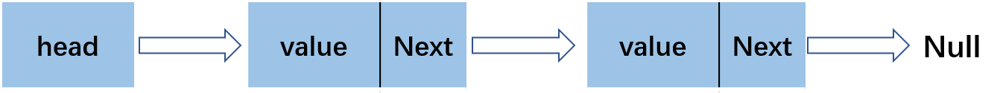
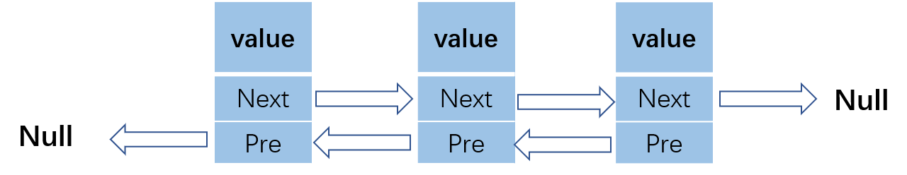
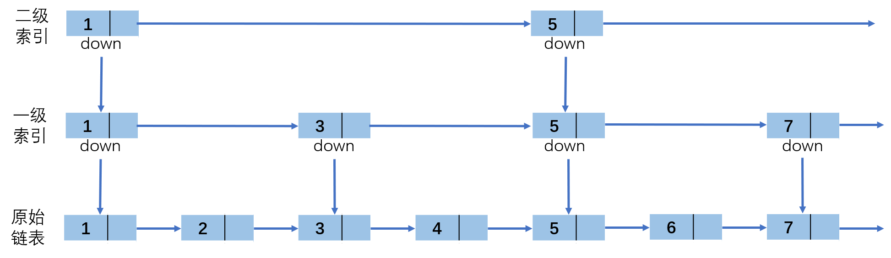
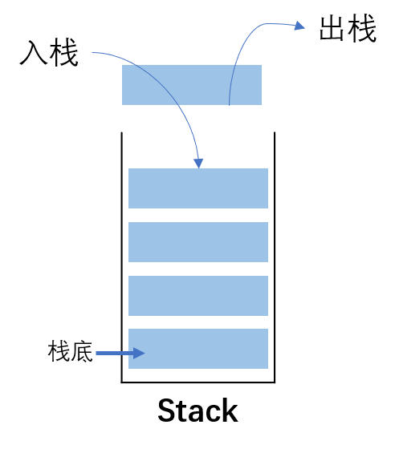
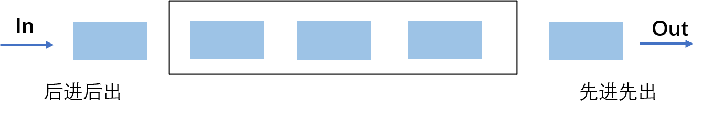
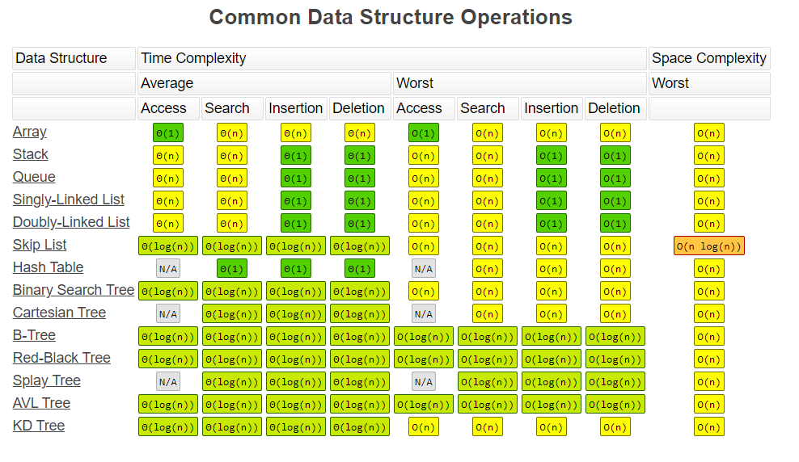

从逻辑结构上来说，数组和链表这两种数据结构都属于线性表，从物理存储来看，数组占用一块连续的内存区，而链表在内存中是分散的，由于这种物理结构差异，在对数组和链表进行增删改查操作的时间复杂度不同。栈和队列是特殊的线性表，数组和链表都可以用来实现栈和队列，本文将简要介绍这几种数据结构。
数组-Array
数组使用的是连续的内存空间，内存地址是连续的，所以在声明时一般需要申请固定大小的内存空间。对数组元素的访问可以进行随机访问，时间复杂度为O(1)。
链表-Linked List
单向链表
链表可以在非连续的空间中存储数据，访问效率低。由节点组成，每个节点都包含下一个节点的指针，在进行删除插入操作时修改相应指针就行，所以相比数组，它的插入删除速度很快。单链表链接方向是单向的，访问要从头部顺序读取

双向链表
双向链表的每个结点有两个指针，分别指向直接后继和直接前驱节点，对双向链表的访问可以从任何地方开始。

跳表-Skip List
跳表只能用于元素有序的情况，也就是链表元素有序。跳表(skip list)对标的是平衡树(AVL Tree)和二分查找，插入、删除和搜索时间复杂度都是O(log n)，其中Redis中的sorted list使用的就是跳表。
跳表其实是对有序的链表进行升维，也就是空间换时间，升维后就会多一维度的信息：

可以看出，这跟二分查找类似，第k级索引结点的个数为n/(2^k)，在跳表中查询任意数据的时间复杂度就是O(logn)，空间复杂度为O(n)。
栈-Stack
栈是一种特殊的线性表，在一端进行操作，特点是先进后出(First in Last out，FILO)，或者说后进先出。

主要包括入栈（push）和出栈（pop）两个操作，Python中可以使用append(data)方法实现入栈操作，使用pop()方法实现出栈操作，可参考：https://docs.python.org/3/library/collections.html
队列
队列是允许在一端进行插入而在另一端进行删除操作的线性表，特点是先进先出（First in First Out，FIFO）。

在Python中，入队使用append(data)方法实现，出队使用pop(0)。
一种两端都可以进行入队和出队操作的队列称为双端队列，还有一种队列叫优先队列(priority queue)，队列中的元素被赋予优先级，具有最高级先出 （first in, largest out）的特点。
python中的列表和元组
列表和元组
列表和元组都是有序的，可以存储任意数据类型的集合，支持切片操作，主要区别如下：
- 列表是动态的，长度可变，可以随意地增加、删减或者改变元素（mutable）。
- 元组是静态的，长度大小固定，无法增加删减或者改变元素（immutable）。要想改变元组，只能重新开辟一块内存，创建新的元组。
1 | l = [1, 2, 3] |
由于列表是动态的、可变的，而元组是静态的、不可变的。所以他们的存储方式是有差异的：
1 | l = [1, 2, 3] |
元组的存储空间，比列表要少 16 字节：
- 由于列表是动态的，所以它需要存储指针，来指向对应的元素（int 型，8 字节）。
- 由于列表可变，所以需要额外存储已经分配的长度大小（8 字节），这样才可以实时追踪列表空间的使用情况，当空间不足时，及时分配额外空间。
为了减小每次增加 / 删减操作时空间分配的开销，Python 列表每次分配空间时都会额外多分配一些，这样的机制（over-allocating）保证了其操作的高效性：增加(append()) / 删除(pop())的时间复杂度均为 O(1)。元组长度大小固定，元素不可变，所以存储空间固定。
元组比列表更加轻量级一些，所以元组的性能速度要略优于列表。当然，对于增加、删除或者修改元素，列表的效率更高。在实际应用中，如果存储的数据和数量不变，使用元组更合适。如果存储的数据或数量是可变的，需要随时更新，则使用列表。
常用方法
创建列表
1 | l=[] |
list()是一个function call，创建list时会进行一系列参数检查的操作，而[]可以进行直接调用，是一个内置的C函数，下面测试一下他们的性能差异：1
2
3
4python -m timeit -n 1000000 -r 5 -s 'a=[]'
1000000 loops, best of 5: 6.7 nsec per loop
python -m timeit -n 1000000 -r 5 -s 'a=list()'
1000000 loops, best of 5: 7.17 nsec per loop
可以发现[]方法的性能更优。
增加元素
1 | # 获取list长度 |
删除元素
可以使用remove、pop和del方法参删除list中的某个元素1
2
3
4
5
6
7
8
9
10
11
12
13
14
15
16
17
18
19
20l = [3, 2, 5, 4, 8, 6]
l.remove(3)
l
[2, 5, 4, 8, 6]
l.pop(0) # l.pop()删除最后一个元素
2
l
[5, 4, 8, 6]
del l[0]
l
[4, 8, 6]
del l[0:2]
l
[6]
del l
l
Traceback (most recent call last):
File "<stdin>", line 1, in <module>
NameError: name 'l' is not defined
>>>
对于 Python 3.2以后的版本可以使用clear()清空元素：1
2
3
4l = [3, 2, 5, 4, 8, 6]
l.clear()
l
[]
切片
1 | # 获取list长度 |
列表推导式
列表推导式是Python中比较常用的功能，用于从其他可迭代对象(如元组、字符串、数组、列表等)中创建新的列表。语法格式如下：1
newList = [ expression(element) for element in oldList if condition ]
比如计算列表中偶数的平方：1
2
3
4
5list_num = [3, 4, 6, 2, 5, 8]
list_square = [x ** 2 for x in list_num if x % 2 == 0]
list_square
[16, 36, 4, 64]
>>>
上面的列表推导式等价于：1
2
3
4
5
6list_num = [3, 4, 6, 2, 5, 8]
list_square = []
for x in list_num:
if x % 2 == 0:
list_square.append(x ** 2)
>>>
其它方法
下面列出操作list的其它内置方法
| 方法 | 描述 | 语法 |
|---|---|---|
| index() | 返回查找元素的索引 | list_name.index(element, start, end) |
| count() | 返回目标元素的个数 | list_name.count(object) |
| sort() | 排序，默认升序排列 | 降序：list_name.sort(reverse=True) |
| sorted() | 排序,返回排好序的新列表 | sorted(list_name) |
| reverse() | 翻转列表 | list_name.reverse() |
| reversed() | 翻转列表,返回一个倒转后的迭代器 | reversed(list_name) |
| reduce() | 对可迭代对象(链表、元组等)中元素进行累积 | reduce(fun,seq) |
| sum() | 求和 | sum(iterable, start) |
| max() | 求最大值 | max(list) |
| min() | 求最小值 | max(list) |
| enumerate() | 返回可迭代对象的下标和值 | enumerate(iterable, start=0) |
| filter() | 过滤序列 | filter(function, iterable) |
| map() | 求最大值 | max(list) |
| min() | 求最小值 | max(list) |
注意，元组没有内置的reverse() 和 sort()这两个函数
复杂度分析
理解了这几个数据结构的特性后，我们可以计算出对他们进行增删改查的算法复杂度了，可参考https://www.bigocheatsheet.com/ ，列出了对各种数据结构操作的时间复杂度和空间复杂度。

参考资料
- 链表实现代码：https://www.geeksforgeeks.org/implementing-a-linked-list-in-java-using-class/
- Java 链表源码：http://developer.classpath.org/doc/java/util/LinkedList-source.html
- 跳表：https://redisbook.readthedocs.io/en/latest/internal-datastruct/skiplist.html
- https://www.bigocheatsheet.com/
本文标题:算法笔记：数组、链表、栈和队列
文章作者:hiyo
文章链接:https://hiyongz.github.io/posts/algorithm-notes-for-linear-list/
许可协议:本博客文章除特别声明外，均采用CC BY-NC-ND 4.0 许可协议。转载请保留原文链接及作者。